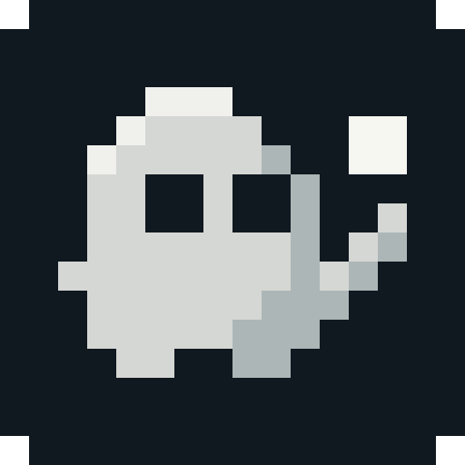
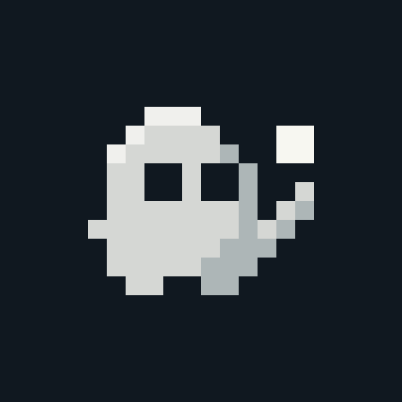
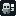
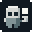
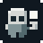
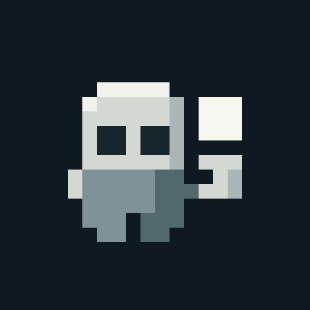
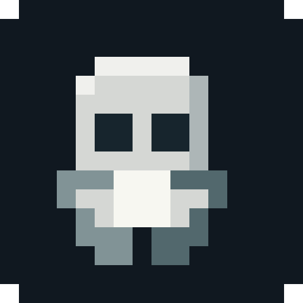
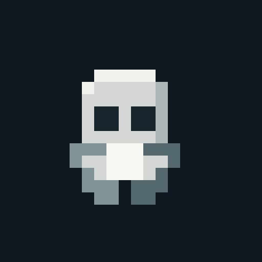
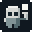
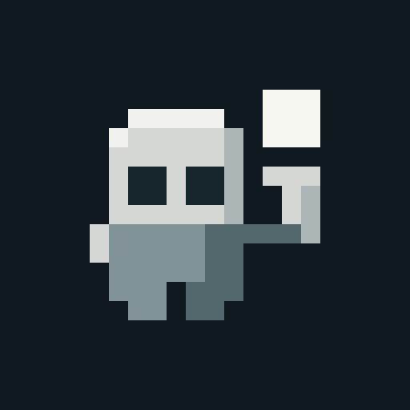

S0SHAPE STUDY

Previous keeper
Reference in the same neutral palette. The thin diagonal arm and small floating pixel are easy to lose.
16 px
32 px
48 px

app cropspritewright×
spritewright×
A larger square, a readable hand, and room for the face.

Reference in the same neutral palette. The thin diagonal arm and small floating pixel are easy to lose.

app cropA broad, level hand and a large square, separated by a clean gap. The face stays unobstructed.

16 px
32 px
48 px
app crop
The square sits between two hands. The holding action is direct, but the pixel covers part of the body.

app cropA taller pose, presenting the square above one shoulder. Energetic, with more weight at the top.

32 px
app crop